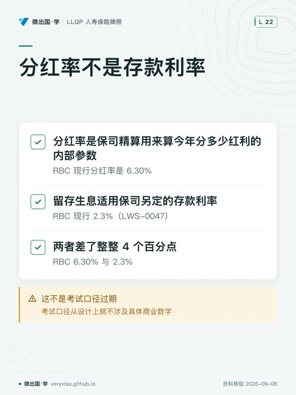

🃏 Flashcards · 3 闪卡 · 3 张 🖼 Slides · 2 幻灯 · 2 页 ✍️ Questions · 7 刷题 · 7 道
人寿保险 Life Insurance P1 必拿分 P1 Must score
ZH EN ZH + EN
先看这一章怎么考 First, how this chapter is tested
分红机制与红利选项辨析题：给出客户健康恶化但想增加终身保额、或误以为分红是合同承诺的固定回报的情景，考查参与分红（participating, par）的董事会自由裁量属性及购买增额已缴清保险（paid-up additions, PUA）免核保的核心优势。 Dividend mechanics and dividend option distinction questions: Presenting scenarios where a client's health deteriorates but they wish to increase lifetime coverage, or mistakenly believe dividends are contractually promised fixed returns, testing the board discretion nature of participating (par) policies and the core advantage of purchasing paid-up additions (PUA) without medical underwriting. 现金退保价值与保单贷款计算题：给出保单现金退保价值（cash surrender value, CSV）、最高贷款比例（考试口径常见例为 90%）及未偿还贷款本息，考查受让人或受益人在退保或被保险人身故时实际能拿到的净额。 Cash surrender value and policy loan calculation questions: Providing a policy's cash surrender value (CSV), the maximum loan percentage (the standard exam benchmark commonly cites 90%), and outstanding loan principal and interest, testing the net amount an assignee or beneficiary actually receives upon surrender or the death of the life insured. 停缴保费与不丧失利益四选一情景题：描述投保人停止缴费后的不同诉求（如不想再缴费但想终身保留小额保障，或想在有限期内保住原始保额），考查现金退保、自动垫缴保费（automatic premium loan, APL）、减额已缴清保险（reduced paid-up insurance）与展期定期保险（extended term insurance）的精准匹配。 Premium cessation and four non-forfeiture option scenario questions: Describing different policyholder objectives after stopping premium payments (such as wanting to permanently stop paying while maintaining a reduced lifetime benefit, or wanting to keep the full original face amount for a limited period), testing the precise matching among cash surrender, automatic premium loan (APL), reduced paid-up insurance, and extended term insurance. 最常丢分的陷阱（看到题干信号就警觉） Traps that cost the most marks (watch for the signal in the stem)
混淆合同参与权与分红金额 Confusing contractual participation rights with dividend amounts 题干或选项出现 guaranteed dividend、fixed annual return 或将分红率等同于累积生息账户存款利率的表述。 The question stem or options include terms like guaranteed dividend, fixed annual return, or equate the dividend scale interest rate with a deposit rate on an accumulate-at-interest account. 减额缴清与展期定期张冠李戴 Mixing up reduced paid-up insurance and extended term insurance 题干强调客户停缴后希望 maintain the original face amount（选展期定期）还是 maintain permanent lifetime coverage（选减额已缴清）。 The question stem emphasizes whether the client stopping premiums wishes to maintain the original face amount (extended term) or maintain permanent lifetime coverage (reduced paid-up). 把 PUA 当成需核保的附加险 Treating paid-up additions as an underwritten rider 题干提到被保险人健康恶化（health has deteriorated）但仍想利用保单红利增加永久保额。 The question stem mentions that the life insured's health has deteriorated, yet they still wish to use policy dividends to increase permanent coverage. 本章考点页：导图、要点表、7 道带逐项解析的练习 →
核实日期：2026-09-06｜考纲位置：Life c2「分析可用产品」，占本模块 30%——本篇讲的终身寿险（whole life）与 T-100（Term-100）是这一组件里现金价值机制最长青、也最容易被『分红＝保证收益』这类误解带偏的两个产品。
复核周期：2027-09-01。本页现行数字里，各保司分红红利率（dividend scale interest rate）每年 4 月或 7 月各自重定一次，属会变的快照，出处见文末「来源」；机制性结论（准备金、免税测试、不丧失利益）长青，不受年度调整影响。
与《寿险与税》一篇互链：本篇只讲终身寿险与 T-100 的产品机制 ，退保/贷款的应税利得计算、ACB、G1/G2/G3 免税测试分类，一律不在本篇重复，请参见那一篇。
0. 这一篇解决什么问题
终身寿险和 T-100 是客户听得最多、也误解得最深的两类产品——「终身有保障」「分红能生钱」「保费交着交着就不用交了」，这三句话每一句都只对了一半。这一篇要讲清楚三件事：终身寿险为什么要在早期多收保费、这些多收的钱去了哪、以及分红到底是合同权利还是保司恩惠 ；T-100 为什么长得像定期险却按永久险卖、又为什么一旦失效就彻底归零；以及 2026 年市场上，当客户问「我这份分红保单到底能不能信」时，代理人该拿什么现行数字去回答，而不是背考试口径里那句抽象的「盈余可能以红利形式分给持有人」。
这一篇帮你做到三件事：① 给客户解释清楚「分红不保证」这句免责声明背后的真实法律含义，而不是把它当成一句套话念过去；② 拿到一份终身寿险的保单周年对账单，分清楚保证栏和非保证栏、现金价值和退保价值分别是什么；③ 判断一个具体情形该用「减额缴清」还是「展期定期保险」保底，以及 T-100 保单一旦超过宽限期会发生什么、能不能补救。
一、制度设计与底层逻辑：为什么终身寿险和 T-100 长这个样子 本节回答 This section answers 终身寿险早期多收保费机制、分红属性及限期缴区别 Explaining whole life early premium overfunding mechanics, participating features, and limited-pay structures.
1. 早期多收保费，不是保司贪心，是数学逼出来的
定期险每年的死亡成本随年龄上升，保费本可以逐年上涨（yearly renewable term 就是这么定价的）；但终身寿险要给一个从签单起就固定不变的保费，而这个人的死亡概率会一路涨到接近 100%。要让一个固定数字撑住一条不断上升的成本曲线，唯一的办法是早期多收、晚期少收 ——年轻时缴的保费里，一部分买当年的保障，另一部分存进保单准备金（policy reserve），这笔准备金连本带息滚存几十年，到老年死亡成本飙升时反过来补贴保费。这条底层逻辑决定了终身寿险的现金价值不是「送的」，是投保人自己早年预付、被保司代为投资积累的那部分保费。理解了这一条，后面「退保能拿回多少」「保单贷款借的是谁的钱」这些问题就都有了共同的答案：退保价值是合同约定的请求权；保单贷款则是保险人提供、以保单价值支持的借款。准备金不是为客户单独保管的银行存款，贷款还要计息。
2. 分红：合同权利，还是董事会的年度施舍？
答案是两者的混合体，而这正是最容易被讲错的一处。 参与分红（participating, "par"）保单的持有人确实有权参与盈余分配的可能性——这是写进合同的一项权利；但分不分、分多少，完全由保司董事会每年自行裁定，不是精算出来的确定数字。2026 年 Equitable Life 官方新闻稿把这条讲得直白：「Dividends are not guaranteed. Dividends are paid at the sole discretion of the Board of Directors.」（The Equitable Life Insurance… ）——参与权是合同性的，具体数额是自由裁量的，两者不矛盾，但客户经常把它们混为一谈，以为「买了分红保单」等于「保证能拿到多少分红」。
不分红（non-participating, "non-par"）保单的逻辑更直接：盈余全部归保司（计入留存收益或作为股东分红），保单持有人不参与也不承担投资端的盈亏波动，代价是同等保障下 non-par 保费通常低于 par ——你少付的那部分保费，买的就是「不用猜每年分多少」的确定性。两种保单持有人都不承担亏损：par 保单的红利可以降到很低甚至阶段性归零，但已经写进合同的保证保额、保证现金价值表，不会因为公司经营不善而缩水。
3. T-100：一个刻意不做储蓄功能的永久险
T-100（Term-to-100）是加拿大市场一个很特殊的产品设计：它按「身故先到还是 100 岁先到」定价和收费，本质上是一份保费缴到 100 岁封顶、覆盖到终身 的定期险，但监管与行业把它归入永久险类别，因为它确实不到期、不需要续保核保。它的特殊之处在于通常不建立可退保的现金价值——早期多收的那部分保费仍然存在（否则无法用平准保险成本 level cost of insurance 定价），但这笔钱不对投保人开放退保或贷款通道，只用于支撑终身覆盖这件事本身。这个设计换来的是比终身寿险低、比定期险高的保费，代价是没有不丧失利益（non-forfeiture benefit）这层保底——第五节会讲清楚这意味着什么。
4. 三栏对比：定期险、终身寿险、T-100，一张表看清定位
这张表最容易被读错的一格是「典型用途」里 T-100 和终身寿险的区别：两者都能拿来覆盖身故时的资本利得税或做慈善捐赠承诺 ，但如果客户还想要「万一将来需要用钱能退保拿现金」这层弹性，T-100 从制度设计上就不提供这个选项——省下来的保费买的正是「放弃这层弹性」。
⚠️
「限期缴」不等于「保障期短」
限期缴终身寿险（limited payment whole life，如 20-pay）只是缴费期 缩短到 20 年，保障期仍然是终身。把「缴 20 年」听成「保 20 年」是最常见的销售场景听岔，客户事后投诉的重灾区之一。限期缴的代价是同样保额下单期保费显著更高——它消除的是「活得比预期久、还得一直缴费」这个长寿风险，不是缩短保障。
节末检索小测 · 先别往回翻，凭记忆作答 Quick recall check: answer from memory before scrolling back
Clara, age 38, is comparing a 20-pay non-participating whole life policy with a life-pay participating whole life policy of the same face amount. Which statement accurately describes the structural difference between these options?
38 岁的 Clara 正在比较同一保额的 20 年限期缴不分红终身寿险与终身缴分红终身寿险。下列哪项准确描述了这两种选项在制度结构上的区别？
a The 20-pay policy terminates coverage after 20 years, whereas the life-pay policy covers Clara for life. ✗ 掉入「概念混淆」陷阱。限期缴终身寿险（limited payment whole life，如 20-pay）只是把缴费期缩短到 20 年，保障期仍然是终身，不会在 20 年后终止保障。 Falls into the 'concept confusion' trap. Limited payment whole life (such as 20-pay) merely compresses the premium payment duration to 20 years while coverage remains for life; coverage does not terminate after 20 years.
b The 20-pay policy requires higher periodic premiums to eliminate longevity payment risk while maintaining lifetime coverage. ✓ 正确。限期缴终身寿险（limited payment whole life）在 20 年内缴清全部保费并保障终身，消除了活得比预期久还得一直缴费的长寿风险，代价是同等保额下单期保费显著更高。 Correct. Limited payment whole life pays up all premiums within 20 years while guaranteeing lifetime coverage, eliminating the longevity risk of having to pay premiums if one outlives life expectancy, at the cost of substantially higher periodic premiums for the same face amount.
c The non-participating policy requires Clara to pay additional premiums if the insurer experiences investment losses. ✗ 掉入「盈亏承担误解」陷阱。不分红（non-participating, non-par）与分红（participating, par）保单持有人都不承担保司亏损，写进合同的保证保额和保证现金价值不会因经营不善而缩水或要求补缴。 Falls into the 'misconception of loss sharing' trap. Neither non-participating nor participating policyholders bear company investment losses; contractually guaranteed death benefits and cash surrender values never diminish or require additional premium calls due to poor company results.
d The participating policy guarantees an annual dividend payout determined by a fixed formula in the contract. ✗ 掉入「混淆合同参与权与分红金额」陷阱。参与分红（participating, par）保单持有人虽有合同参与权，但每年是否分红及金额完全由保司董事会自由裁量（at the sole discretion of the Board of Directors），并非保证。 Falls into the 'confusing contractual participation rights with dividend amounts' trap. Although participating policyholders hold a contractual right of participation, whether dividends are declared and their exact amounts remain at the sole discretion of the insurer's board of directors and are not guaranteed.
看答案与每个选项的解析 Show the answer and why each option is right or wrong 答案 Answer ：b
二、2026 现行政策与数字：分红率、贷款利率、保司倒闭谁来兜底 本节回答 This section answers 红利四种去向、分红率与存款利率差异及保单贷款规则 Explaining the four dividend options, differences between dividend scale and deposit rates, and policy loan rules. 本章考题 1 Question 1
1. 分红的四个去向：一张表说清楚，其中一个选项的利率低到反直觉
图：分红险四种去向——红利宣布后可以选择怎么用
保单红利一旦被董事会宣布，持有人可以选择红利怎么用，考试口径给出六种选项，最核心的四种是：
这张表最反直觉的一格，是「累积生息」的利率 ：RBC 现行分红率（dividend scale interest rate）是 6.30%，但红利存进「累积生息」账户后只按 2.3% 计息（RBC Insurance ）——两者差了整整 4 个百分点。原因是分红率不是给客户的存款利率，它是保司精算师用来计算『今年该分多少红利』的一个内部假设参数，客户实际能拿到的是红利宣布之后的那笔钱，这笔钱一旦选择「留存生息」，适用的是保司另定的存款利率，不是分红率本身。这正是本节要拆穿的第一个常见混淆：分红率高，不等于你把红利放在保司账上能生的钱多。
2. 考场与现行对照表之一：PUA 采用率——考试口径的断言 vs 现行的空白
3. 考场与现行对照表之二：分红率现行值——考试口径从不给保司数字，2026 现行按保司各自不同
4. 现金价值、退保价值、保单贷款：三个数字不是同一个数字
这是本章最容易被简化过头的一处。保单的账户/准备金价值 （第一节讲的那笔早期超收积累）在早期几年，扣掉保司初期承保成本（surrender charge）之后，实际能退保拿到的现金退保价值（cash surrender value, CSV）常常显示为$0——考试口径示例中早期可能为零；实际何时出现 CSV 须查该产品保证价值表，不是保单出了问题。CSV 随时间增长后，投保人才能：① 全额或部分退保拿走这笔钱（部分退保的应税处理见《寿险与税》一文）；② 拿它去做保单贷款（policy loan），考试口径常见例为 CSV 的 90%，实务借款上限按所持合同，按现行利率计息（RBC 2026 现行 6.45%，Equitable 现行 6.50%，均见文末来源）；贷款本息如果不还清，会同时从退保价值和身故给付里扣除——这是客户最容易漏算的一步。
5. 如果保司倒闭了，我的现金价值还在吗
考试口径全书没有回答这个问题。答案在 Assuris——加拿大人寿与健康保险公司的行业保障机制，2026 年现行保障级别是：死亡给付、健康给付、月收入给付各按「$1,000,000／$250,000／$5,000 每月 或 90% 保额，取较高者」保障，现金价值及累积价值按各自利益金额的 $100,000 或 90% 取较高者保护，均不超过原利益金额（Assuris ）。也就是说，一份现金价值 $150,000 的分红终身寿险，如果承保公司倒闭，Assuris 保障的是 $135,000（90% 更高），而不是全额。这条信息考试口径完全没有，却是客户最常问、代理人最该在讲现金价值时顺带讲清楚的一句话。
节末检索小测 · 先别往回翻，凭记忆作答 Quick recall check: answer from memory before scrolling back
Marcus owns a participating whole life policy and notices that the insurer announced a dividend scale interest rate of 6.30% this year. He selects the 'accumulate at interest' dividend option. What rate will apply to the dividends left on deposit?
Marcus 持有一份分红终身寿险，注意到保险公司今年宣布的分红率（dividend scale interest rate）为 6.30%。他选择了「累积生息」红利选项。留存在保司账户里的红利将按什么利率计息？
a A separate deposit rate set by the insurer, which can be well below the 6.30% dividend scale rate. ✓ 正确。分红率（dividend scale interest rate）只是精算师计算当年应分多少红利的内部假设参数；红利宣布后若选择累积生息（accumulate at interest），适用的是保司另定的存款利率（如现行举例中的 2.3% 或 3.50%），通常显著低于分红率。 Correct. The dividend scale interest rate is merely an internal actuarial assumption used to calculate declared dividends; if dividends are left to accumulate at interest, a separate deposit rate set by the insurer applies (such as 2.3% or 3.50% in current examples), which is typically significantly lower than the dividend scale rate.
b The full 6.30% dividend scale interest rate, compounded annually for as long as the policy stays in force. ✗ 掉入「指标误用」陷阱。把分红率（dividend scale interest rate）误当成客户把红利留在保司账上能拿到的存款利率，混淆了内部精算参数与留存生息账户利率。 Falls into the 'metric misapplication' trap. This confuses the dividend scale interest rate with the deposit rate a client receives when leaving dividends with the insurer, conflating an internal actuarial parameter with an account deposit interest rate.
c The policy loan interest rate minus a fixed administrative spread that is specified in the policy contract. ✗ 掉入「利率概念张冠李戴」陷阱。保单贷款利率（policy loan interest rate）是投保人向保司借款时支付的利率，与红利累积生息账户的存款利率无关。 Falls into the 'mixing up interest rate concepts' trap. The policy loan interest rate is the borrowing rate paid by a policyholder borrowing from the insurer and has nothing to do with the deposit interest rate applied to accumulated dividends.
d A guaranteed minimum rate equal to 90% of the dividend scale interest rate declared by the board. ✗ 掉入「数字拼凑」陷阱。90% 是考试口径中保单贷款占现金退保价值（CSV）的常见上限比例或行业破产保障机制的保护比例，与累积生息利率毫无关系。 Falls into the 'arbitrary numbers' trap. Ninety percent is an exam benchmark limit for policy loans against cash surrender value or an insolvency protection guarantee threshold, having no relevance to the accumulate-at-interest deposit rate.
看答案与每个选项的解析 Show the answer and why each option is right or wrong 答案 Answer ：a
三、实务流程：从投保时的选择到停缴那一刻的四选一 本节回答 This section answers 投保初始选择、年度对账单双栏结构与停缴后四道保底 Explaining initial policyholder choices, annual statement dual-column structures, and four non-forfeiture safeguards. 本章考题 2 Question 2
1. 投保时就要定下来的两件事
客户签单那一刻要做两个决定，且大多数保司不允许中途轻易更改：缴费方式 （终身缴 / 趸缴一次付清即成为「已缴清」paid-up 保单 / 限期缴如 10 年或 20 年）；以及要不要参与分红（选 par 就接受「保费更高但有分红可能」，选 non-par 就是「保费更低但没有分红」）。这两个选择一旦做出，后续想改通常意味着退保重新投保，而重新投保要按当下的年龄和健康状况重新核保——这体现了更换保单时必须考虑的风险：旧保单的续保费率按原发单时的健康等级算，换新单反而可能因为现在健康变差而更贵，同一逻辑也适用于「想从 non-par 换成 par」这种操作。
2. 保单周年日之后：读懂年度对账单
签单一年后，分红保单会收到第一份年度对账单（annual statement），上面通常分两栏：保证栏 （guaranteed）——写进合同、不会变的最低现金价值和最低身故给付；非保证栏（non-guaranteed 或 current）——按当前分红率和红利表算出来的预计数字，会随每年红利表调整而变。1970–80 年代的行业丑闻（第五节详述）之后，监管与行业自律要求 illustration 必须同时展示这两栏，而不能只给一份看起来很美的乐观预测。代理人的执业底线是：任何时候都要向客户讲清楚哪一栏是承诺、哪一栏只是当前假设，这也是本课「实务流程」里最直接关系到合规责任的一步。
3. 忘缴保费之后，四道保底怎么排队
客户漏缴非首期保费时，先核 BC s.50 宽限期：普通寿险为不计到期日的 30 天，工业保险为 28 天，合同约定更长则取更长。若有足够 CSV 且条款允许，可通过 APL 垫缴。考试口径举例贷款本息达到合同上限（常见为 CSV 的 90%–100%）后再过规定期限，合同终止并支付剩余 CSV。不能等 CSV 已耗尽才假定还能用同一笔钱购买减额缴清或展期保障；这些选择应在资金足够时评估，并看所持合同是否提供（BC Laws（King's Printer 官方合并本） ）。
4. T-100 走的是完全不同的一条路
考试口径按通常无现金退保价值的 T-100 说明：无法靠 APL 垫缴，也不能凭不存在的 CSV 购买缴清或展期保障。但在 BC，普通个人寿险须同时看 Insurance Act s.57：宽限期满失效后再有 30 天，可在被保险人仍生存时补缴欠期保费复效；错过这段，失效后 2 年内满足申请、欠款与法定利息、健康及可保性证明等条件，保险人须复效。已领取 CSV 或已行使缴清/展期选项者，以及团体、债权人团体及互助社合同，不适用这些条款（BC Laws（King's Printer 官方合并本） ）。
节末检索小测 · 先别往回翻，凭记忆作答 Quick recall check: answer from memory before scrolling back
Five years after buying a non-participating whole life policy, Elena's health declines and she wishes to switch her policy to a participating whole life policy to build paid-up additions. What practical obstacle will she face?
购买不分红终身寿险五年后，Elena 的健康状况下降，她希望把保单改为分红终身寿险以累积增额已缴清保险（PUA）。她会面临什么实务障碍？
a She can switch freely on any policy anniversary simply by paying the historical difference in premiums plus interest. ✗ 掉入「随意变更假设」陷阱。是否参与分红（par vs. non-par）在投保签单时即已锁定，大多数保司不允许中途补差价直接更改。 Falls into the 'assuming arbitrary changes' trap. Whether a policy is participating or non-participating is locked in at application and issue, and most insurers do not allow policyholders to switch mid-stream simply by paying the difference in premiums.
b She must first use up her automatic premium loan limit before the insurer will accept any request to change the policy. ✗ 掉入「机制混淆」陷阱。自动垫缴保费（automatic premium loan, APL）是漏缴保费时防止失效的垫付机制，不是变更分红属性的前置条件。 Falls into the 'mechanism confusion' trap. Automatic premium loan (APL) is a premium advance feature designed to prevent inadvertent lapse when premiums are unpaid, not a prerequisite for altering dividend participation status.
c A switch usually means surrendering the policy and buying a new one, underwritten at her current age and health. ✓ 正确。缴费方式与是否参与分红（participating vs. non-participating）在签单时定下后通常无法直接修改，后续想改往往意味着退保重新投保，必须按当下的年龄和已恶化的健康状况重新核保。 Correct. Payment structure and dividend participation status (participating vs. non-participating) are fixed at issue and cannot be directly altered; switching subsequently typically requires surrendering the existing policy and applying for a new one, subject to underwriting at the client's current age and deteriorated health.
d She is barred by regulation from owning a participating policy once a medical condition is diagnosed. ✗ 掉入「虚构监管禁令」陷阱。法规并未禁止患病客户投保分红险，真正的障碍是更换新单需重新核保（underwriting），健康变差会导致保费更贵甚至被拒保。 Falls into the 'fabricating regulatory bans' trap. Regulations do not prohibit clients diagnosed with medical conditions from owning participating policies; the real obstacle is that obtaining a new contract requires underwriting, where declined health leads to rated premiums or outright denial.
看答案与每个选项的解析 Show the answer and why each option is right or wrong 答案 Answer ：c
四、2026 市场：谁在卖，产品叫什么，柜台怎么说 本节回答 This section answers 分红险按身故或现金价值导向分化、按批次分红及定位 Explaining death benefit versus cash accumulation product designs, cohort-based dividend pooling, and product positioning.
以下产品线名称与红利率均于 2026-09-04 从各公司官方页回源核实（Sun Life、Manulife、Equitable、RBC、BMO 五家为官网一手核实；Canada Life 产品名来自两篇独立行业媒体报道交叉印证，Empire Life 产品名因官网产品页 403 转引经纪比价二手源）。促销数字、佣金一律不写。
Sun Life ——分红终身寿险产品线为 Sun Par Protector 与 Sun Par Accumulator，2026/2027 周期（2026-04-01 起）分红率维持 6.25%（Sun Life Financial ）。它解决考试口径里的哪个概念：这两个产品名本身就是「身故给付导向」（Protector）与「现金价值积累导向」（Accumulator）两种客户需求的直接映射，对应第一节讲的「同样是 par 保单，客户想要的东西可以完全不同」这条设计逻辑。
Manulife ——Manulife Par 与捆绑健康管理增值服务的 Manulife Par with Vitality Plus，2026-09-01 起分红率维持 6.35%，适用于 2018-06-23 及以后签发的保单（更早批次的历史并购品牌如 Standard Life、Maritime Life 适用不同利率表，Manulife ）。它解决考试口径里的哪个概念：不同签发年份适用不同利率表，正是第一节「保单准备金按批次分组精算」这条机制在官网披露文件里的直接体现。
Equitable Life ——Equimax Estate Builder®（偏身故给付/遗产规划）与 Equimax Wealth Accumulator®（偏现金价值积累），均可选 10 年缴／20 年缴／终身缴（The Equitable Life Insurance… ）；分红年度按每年 7 月至次年 6 月计算（与其他保司的 4 月制不同），2026/2027 周期分红率维持 6.40%，红利「累积生息」利率 3.50%，多数保单贷款利率 6.50%（The Equitable Life Insurance… ）。它解决考试口径里的哪个概念：Estate Builder 与 Wealth Accumulator 这一对命名，正是本课反复强调的「同一类产品内部还要按客户真实需求（身故金优先 vs 现金价值优先）再分叉」的现实样本。
RBC Insurance ——RBC Growth Insurance 与 RBC Growth Insurance Plus，2026/2027 周期（2026-04-01 起）分红率维持 6.30%，保单贷款利率 6.45%（按加皇银行 prime+2% 每年重定），红利「累积生息」现行利率仅 2.3%（RBC Insurance ）。它解决考试口径里的哪个概念：三个利率并列摆在同一份官方披露文件里，是本节第 1 小节「分红率不是存款利率」这条反直觉结论最直接的官方证据来源。
Canada Life——2026 年 4 月起适用的官方顾问指南列出 Wealth Achiever、Balanced Achiever 和 Estate Achiever 三条产品线（acp.canadalife.com ）。分别比较早期现金价值、均衡目标和长期遗产目标时，应读各自保证与非保证演示；不能用产品名字推定回报高低。
Empire Life ——官方公布 2026/2027 分红率维持 6.25%（Empire Life ）。分红率不是保单保证回报，也不能据此比较不同公司的实际现金价值。
BMO Insurance ——官网 2026 年仍在正常销售 Term 100，未另立品牌名，保额区间 $50,000 至 $2,000 万，官网明确列出的用途是抵消 RRSP 身故时的递延税负、抵消小屋等资产的资本利得税（BMO Insurance ）。它解决考试口径里的哪个概念：这直接对应第一节「T-100 是刻意不做储蓄功能的确定性承诺工具」这条定位，也对应本章确定金额慈善捐赠案例（用 T-100 覆盖确定金额的慈善捐赠承诺）不是考试口径编出来的场景，而是现实产品仍在正常服务的用途。
本页的公司示例只支持各自注明的产品或分红事实，未列公司的产品名称和分红率不作比较；实际建议应取得当期产品说明、合同及演示。
节末检索小测 · 先别往回翻，凭记忆作答 Quick recall check: answer from memory before scrolling back
Two clients hold participating whole life policies with the same insurer, but one policy was issued ten years ago under an older policy cohort while the other was issued this year. How does the insurer manage dividend scales across these policies?
两位客户持有同一家保险公司的分红终身寿险，但一份是十年前按旧批次签发的，另一份是今年新签发的。保险公司如何管理这两份保单的红利表（dividend scale）？
a The insurer is legally required to apply the exact same dividend scale interest rate to every policy it has ever issued. ✗ 掉入「一刀切假设」陷阱。保单准备金（policy reserve）和红利表（dividend scale）按不同签发批次或历史产品线分组精算，不同签发年份批次可适用不同的红利表。 Falls into the 'one-size-fits-all assumption' trap. Policy reserves and dividend scales are managed actuarily across distinct issue cohorts or historical product lines, meaning different issue-year blocks can be subject to separate dividend scales.
b Different issue cohorts and product lines can be assigned separate dividend scales based on the underlying reserve pool experience. ✓ 正确。保单准备金按批次分组精算，不同签发年份批次或不同定位的产品线（如偏身故给付导向 vs 偏现金价值积累导向）适用各自的红利表（dividend scale）与演示。 Correct. Policy reserves are grouped and managed actuarily by cohort, meaning different issue years and product series (such as death-benefit oriented versus cash-accumulation oriented lines) utilize their own dividend scales and illustrations.
c Older policies automatically lose their participating status once the insurer launches a new product series. ✗ 掉入「合同权利灭失误解」陷阱。参与分红（participating）是写进原合同的权利，不会因为保司推出新批次产品而丧失分红资格。 Falls into the 'loss of contractual rights misconception' trap. The right to participate in surplus is a contractual guarantee in the original policy and is not extinguished when the insurer launches a new product cohort.
d The client with the higher product name tier is guaranteed a higher cash surrender value regardless of contract terms. ✗ 掉入「望文生义」陷阱。比较早期现金价值、均衡目标或长期遗产目标时，应阅读各自合同的保证与非保证演示（illustrations），不能凭产品名称推定回报高低。 Falls into the 'judging products by marketing names' trap. When comparing early cash values, balanced performance, or estate transfer targets, one must examine the specific contractual guaranteed and non-guaranteed illustrations rather than inferring returns from product branding.
看答案与每个选项的解析 Show the answer and why each option is right or wrong 答案 Answer ：b
五、历史变革：一次营销丑闻如何决定了今天的披露规则，以及分红率为什么涨了又跌又涨 本节回答 This section answers 消失保费丑闻成因、保证与非保证双栏披露及分红平滑 Explaining the vanishing premium controversies, side-by-side guaranteed and non-guaranteed disclosure rules, and dividend stabilization. 本章考题 3 Question 3
1. 1970–80 年代「消失保费」丑闻：高利率演示，低利率买单
1970–80 年代，加拿大利率一度冲上历史高位（考试口径以当时高利率背景解释销售演示），保险公司据此设计出「保费抵消」（premium offset）产品：用当时的高分红率做演示，向客户承诺「缴满 X 年后，累积的红利和 PUA 现金价值足够自己产生利息去抵扣以后所有保费,保费从此『消失』」。这套演示书面上完全成立，只要利率一直维持在高位。但 1980 年代末到 1990 年代，全球利率大幅下行，分红率跟着腰斩，原本「15 年后保费消失」的承诺，很多保单变成了「25 年、30 年后保费仍未消失」，被迫多缴了十几年——这就是「vanishing premium」丑闻的全部机制。
它的监管后果直接决定了今天的行业规则：保单演示件（illustration）必须同时展示至少两套假设（保证/当前分红两栏），客户必须签字确认已阅读并理解「非保证部分不是承诺」 ——这条规则今天写在每一份分红保单的销售流程里，第三节讲的「年度对账单必须分保证栏与非保证栏」正是这条监管要求的延续体现。
2. 一个不那么久远的小型重演：Sun Life 2021 年那次调降
不用回到 1980 年代找例子——2021 年 4 月 1 日，Sun Life 把分红率从 2017 年以来维持的 6.25% 下调到 6.00%，官方公告写明原因是「continued low interest rates」（那正是 COVID-19 疫情期间全球利率被压到接近零的阶段）。这次调降幅度不大（25 个基点），但它证明了同一套机制在四十年后仍然成立 ：分红率跟随宏观利率走，只是有平滑处理、变动幅度比 1980 年代温和得多。
3. 反直觉的一点：2026 年的分红率，其实比 2022 年更高
分红率会受长期投资组合及平滑机制影响，不能只凭当天央行利率推断方向。本页已登记的一手公告可确认 Sun Life 2021 年下调至 6.00%、2023 年恢复 6.25%，随后维持；其余公司 2022–2026 全序列尚未获得同口径官方依据，不用二手表推断全行业“都上涨”。
4. T-100 供给收窄是真的，但没有「全面停售」
行业普遍说法是「T-100 在加拿大市场持续萎缩」，核实结果是：这句话方向对，但不能说成『已停售』 ——BMO 官网 2026 年仍在正常销售 Term 100（BMO Insurance ），且明确保留了它在遗产税与慈善捐赠场景下的定位。更准确的表述是：主推产品从 T-100 转向终身寿险和万能寿险，但至少还有公司在正常渠道售卖 T-100，代理人不能一概而论地告诉客户「这个产品已经买不到了」。
节末检索小测 · 先别往回翻，凭记忆作答 Quick recall check: answer from memory before scrolling back
Why did the 'vanishing premium' marketing practices of the 1970s and 1980s lead to widespread policyholder disputes and stricter illustration disclosure rules in the 1990s?
为什么 1970–80 年代的「消失保费（vanishing premium）」营销实务会在 1990 年代引发广泛的保单持有人纠纷并催生更严格的演示披露规则？
a Insurers retroactively cancelled the guaranteed cash value tables that had been printed in the original policy contracts. ✗ 掉入「保证条款违约误解」陷阱。已经写进合同的保证现金价值表（guaranteed cash value table）不会因经营或利率下行而缩水，出问题的是非保证的红利预测。 Falls into the 'guaranteed clause breach misconception' trap. The guaranteed cash value table written into the contract never shrinks due to operational difficulties or declining interest rates; the failure lay entirely within non-guaranteed dividend projections.
b Policyholders were taxed every year on their policy reserves before the policies reached the promised offset year. ✗ 掉入「无关税务干扰」陷阱。消失保费丑闻的核心是宏观利率暴跌导致分红率腰斩，而非保单准备金被逐年征税。 Falls into the 'irrelevant tax distraction' trap. The core of the vanishing premium controversy was the sharp decline in macroeconomic interest rates slashing dividend scales, not annual taxation on policy reserves.
c Agents sold Term-100 policies disguised as participating whole life policies that promised fixed dividends every year. ✗ 掉入「产品张冠李戴」陷阱。消失保费（vanishing premium / premium offset）发生在分红终身寿险演示中，而非无分红、无现金价值的 T-100。 Falls into the 'mixing up products' trap. Vanishing premium (premium offset) illustrations occurred with participating whole life policies, not with Term-100, which has neither dividends nor cash value.
d High-rate illustrations were taken as promises, so when rates and dividends fell, premiums did not vanish on schedule. ✓ 正确。当年用历史高位的分红率做保费抵消（premium offset）演示，当 1980 年代末至 1990 年代利率与分红率大幅下行时，红利和 PUA 现金价值不足以按期抵扣保费，导致客户被迫多缴十几年；这直接促使监管要求演示件（illustration）并列展示保证栏与非保证栏并由客户签字确认。 Correct. Historical illustrations used peak interest rate dividend scales to project early premium offsets; when interest rates and dividend scales dropped sharply in the late 1980s and 1990s, dividends and PUA values fell short, forcing policyholders to pay premiums for years beyond the illustration, which prompted regulators to require side-by-side guaranteed and non-guaranteed disclosures signed by clients.
看答案与每个选项的解析 Show the answer and why each option is right or wrong 答案 Answer ：d
六、案例：三个最容易在柜台上讲错的场景 本节回答 This section answers PUA 独立保单叠加本质、保费抵消顺延及 T-100 适配 Explaining paid-up additions as stacked independent policies, premium offset extensions, and Term-100 suitability. 本章考题 4 Question 4
案例 A：PUA 让保额随分红悄悄长大（示例）
素里的 Tony，35 岁买入一份分红终身寿险，保额 $500,000，选择红利选项为「购买增额已缴清保险（PUA）」。十五年里，保司每年宣布的红利都被自动用来买一小笔 PUA，到 50 岁时，Tony 名下的总保额 （原始保额加历年 PUA 累积）已经涨到约 $560,000，且这部分增量完全没有再核保。
适用规则 ：PUA 是用红利当趸缴保费买的小额已缴清永久险，购买时不需要重新提交健康问卷，这是 PUA 相对于「加购一份新保单」最大的优势。
结果 ：Tony 的保障随时间自动增长，即使他这十五年里健康状况变差，也完全不影响 PUA 部分的取得。
常见错法 ：把 PUA 累积的保额增长误以为是「原保单保额自动上调」，实际上它是若干笔独立的小额已缴清保单叠加，每一笔都有自己的现金价值，只是习惯上被合并展示为「总保额」。
案例 B：保费抵消承诺落空（示例）
列治文的一对夫妇在 1986 年——利率仍处于历史高位的年代——为对方买了一份分红终身寿险，代理人按当时约 11% 的分红率做了一份演示：预计缴满 12 年，累积红利与 PUA 现金价值产生的收益就足以完全抵扣此后的保费。到 1998 年（第 12 年），利率已经腰斩，实际分红率远低于演示假设，抵消所需的现金价值缺口很大，这对夫妇被告知还需要再多缴大约 10 年 才能真正实现保费抵消。
适用规则 ：保费抵消从来不是合同承诺，它是建立在某一年分红率假设之上的一次性演示——分红率下行，抵消所需的年数会自动顺延，非保证预测未兑现不自动等于违约；但若销售时作出保证或误导，仍须另行审查合同与销售责任。
结果 ：这对夫妇最终多缴了将近十年保费，才达到最初演示承诺的那个「保费消失」状态。
常见错法 ：把销售演示当成合同保证。这正是 1970–80 年代「消失保费」丑闻的机制在个体客户身上的真实重演，也是今天 illustration 必须并列展示保证栏与非保证栏、客户必须签字确认的直接原因——如果这对夫妇当年拿到的演示件已经并列展示了「低分红率情景」，落差感会小很多。
案例 C：T-100 用于确定金额的终身承诺（示例）
本拿比的 Trevor 计划在身故后给一家慈善机构留一笔确定的 $250,000，且这笔钱只需要在他身故那一刻兑现，生前不需要用到任何现金价值或提前提取的弹性。代理人给他配置了一份 T-100，理由是：T-100 保费比终身寿险低，覆盖到终身，而 Trevor 明确表示不需要现金价值这层功能 ——这正是 T-100 最典型的适用场景。
适用规则 ：T-100 的定价省下的正是终身寿险里那部分用于支撑现金价值/不丧失利益的成本；只要客户确定不需要退保、贷款这些弹性，T-100 用更低的保费买到了同等的终身覆盖确定性。
结果 ：Trevor 用比终身寿险低的保费，锁定了这笔慈善捐赠承诺的终身覆盖。
常见错法 ：反过来给一个未来可能需要用现金价值应急、或想灵活调整保障的客户配置 T-100——一旦客户的需求变化到需要现金价值这一层，T-100 完全没有退路可言，不能凭空提取现金价值；应先核合同变更或复效选项，再评估是否另行投保。
节末检索小测 · 先别往回翻，凭记忆作答 Quick recall check: answer from memory before scrolling back
Over 15 years, Gavin's $500,000 participating whole life policy has grown to a total death benefit of $560,000 through the paid-up additions (PUA) dividend option. How is that extra $60,000 of coverage structured?
在 15 年间，Gavin 的 $500,000 分红终身寿险通过购买增额已缴清保险（PUA）红利选项，总身故保额增长到了 $560,000。这多出来的 $60,000 保额在结构上是怎么构成的？
a It is a series of individual small, single-premium paid-up permanent policies, each generating its own cash value. ✓ 正确。增额已缴清保险（paid-up additions, PUA）是用每年宣布的红利当趸缴保费买下的一小笔独立已缴清永久险，每一笔都有自己的现金价值（cash value），习惯上与原始保额合并展示为总保额。 Correct. Paid-up additions (PUA) represent small, standalone paid-up permanent policies purchased using annual declared dividends as single premiums; each generates its own cash value and by convention is combined with the original face amount to display a total death benefit.
b It is a temporary one-year term insurance rider that must be renewed every policy anniversary. ✗ 掉入「把 PUA 当成定期附加险」陷阱。PUA 买的是永久性的已缴清保险（paid-up permanent insurance），终身有效且有现金价值，不需要每年续保。 Falls into the 'treating paid-up additions as term riders' trap. PUA purchases permanent paid-up insurance that remains in force for life and accumulates cash value, requiring no annual renewal.
c It is an automatic upward adjustment to the base policy's face amount that requires higher ongoing base premiums. ✗ 掉入「原保单保额上调误解」陷阱。常见错法就是把 PUA 误以为是原保单保额直接上调；实际上它是红利作为趸缴保费买的已缴清保单叠加，不会增加原保单的应缴保费。 Falls into the 'assuming base policy face amount increase' trap. A common error is assuming PUA directly adjusts the base policy's face amount; in reality, it stacks separate paid-up policies purchased with dividends without increasing ongoing base premiums.
d It is a non-guaranteed bonus that disappears if the insurer lowers its dividend scale interest rate next year. ✗ 掉入「已宣布红利可撤回误解」陷阱。未来未宣布的分红不保证，但往年已经宣布并用来买成已缴清增额保险（PUA）的保额和现金价值已经是缴清的永久保障，不会因次年分红率下调而消失。 Falls into the 'assuming declared dividends can be revoked' trap. While future undeclared dividends are not guaranteed, previously declared dividends used to purchase paid-up additions are fully paid-up permanent benefits that cannot be taken back if next year's dividend scale decreases.
看答案与每个选项的解析 Show the answer and why each option is right or wrong 答案 Answer ：a
七、考试陷阱与考场与现行对照清单 本节回答 This section answers 八大高频考试陷阱辨析、缴费频率系数差异及双口径 Explaining high-frequency exam traps, modal factor variations across products, and dual-benchmark distinctions.
把「分红」等同于「保证收益」 （陷阱形态：混淆合同权利与自由裁量）。参与分红是合同性权利，但分不分、分多少是保司董事会年度自由裁量，题干出现「保证分红」「稳定收益」这类措辞本身就是错误前提。万能寿险与终身寿险的 modal factor 有无被搞反 （陷阱形态：类别错配）。term 与 whole life 非年缴时都有按期系数（modal factor），考试口径示例的月缴年化总额高于年缴约 6%，实际须按合同系数计算；万能寿险（UL）通常没有 modal factor，月缴年化与年缴总额相同——CISRO 公开样题里有一道题正是考这条对比，题干问的是 UL 而不是 whole life，容易被顺着「保险费率都有月缴附加费」这个惯性直觉带错。把 PUA 当成附加险（rider）购买 （陷阱形态：机制混淆）。PUA 是红利支付方式之一，用的是保司已经宣布归你的钱去买小额已缴清保险；rider 是另外单独付费购买的附加保障，两者的资金来源完全不同。不丧失利益四选项互相搞混 （陷阱形态：流程顺序错位）。CSV 直接退保拿钱；APL 是自动垫缴保费（不是保底选项，是防止失效的临时手段）；减额缴清是用 CSV 买保额缩水的永久险；展期定期是用 CSV 按原保额买一段定期险。题干给出「不想再缴费但想保住原保额」，答案是展期定期而不是减额缴清。T-100 失效当成和终身寿险一样有救济 （陷阱形态：过度类推）。终身寿险失效前有 APL、减额缴清、展期定期三层缓冲；T-100 没有 CSV，超过宽限期直接彻底终止，考试口径说部分合同可在约 2 年内重新激活；BC 普通个人寿险还须适用 s.57 的附条件法定复效权。把分红率（dividend scale interest rate）当成客户能拿到的实际回报率 （陷阱形态：指标误用）。分红率是保司计算红利表的内部假设参数之一，红利宣布后如果选择「累积生息」，适用的是保司另定的存款利率——现实中这个存款利率可以显著低于分红率本身。保费抵消（premium offset）被当成合同保证的固定年限 （陷阱形态：非保证当保证）。抵消所需年数建立在某一年的分红率假设上，分红率下行会导致抵消年限顺延，非保证演示未兑现并不自动证明违约；是否有误导陈述或违反合同、披露义务须另行判断。限期缴（如 20-pay）被听成保障期只有 20 年 （陷阱形态：概念混淆）。限期缴只缩短缴费期，保障期仍是终身；这与「保障期」和「缴费期」是两个独立变量这条更一般的原则一致。
考场与现行对照清单（考场 vs 柜台） ：① PUA 采用率——考场按考试口径「超 90%」的陈述作答，柜台不得当作已核实的现行统计数字讲给客户；② 分红率具体数字——考场只问机制不问数字，柜台一律回客户手上那家保司当年官网数字，不得用别家或去年的数字类推；③ T-100 供给——柜台不宜断言「已全面停售」，至少 BMO 一家 2026 年仍在正常渠道售卖。
边学边测 ：本章题库共 52，覆盖三层难度与两道算数情景题。
节末检索小测 · 先别往回翻，凭记忆作答 Quick recall check: answer from memory before scrolling back
An advisor compares monthly versus annual premium payments on a traditional whole life policy and a universal life (UL) policy. According to exam rules on modal factors, what should the advisor expect?
一位顾问正在比较传统终身寿险与万能寿险（UL）按月缴费与按年缴费的差异。根据考试关于缴费频率系数（modal factor）的规则，顾问应当预期什么结果？
a Both policies apply a modal factor that makes the annualized monthly premiums roughly 6% higher than the annual premium. ✗ 掉入「类别错配」陷阱。顺着所有保险都有月缴附加费的惯性直觉作答，忽略了万能寿险（universal life, UL）通常没有缴费频率系数（modal factor）。 Falls into the 'category mismatch' trap. Answering from the assumption that all life policies charge a monthly premium surcharge overlooks that universal life (UL) typically has no modal factor.
b Whole life uses a modal factor, so monthly payments cost more over a year than the annual premium; UL usually has none. ✓ 正确。定期险与传统终身寿险（whole life）非年缴时适用缴费频率系数（modal factor，考试口径示例月缴年化总额高于年缴约 6%），而万能寿险（UL）通常没有 modal factor，月缴年化总额与年缴相同。 Correct. Term and traditional whole life policies apply a modal factor for non-annual payments (with the exam benchmark illustrating that annualized monthly premiums exceed annual premiums by roughly 6%), whereas universal life (UL) typically has no modal factor, making total annual outlay under monthly payments identical to annual payments.
c Only the universal life policy charges a modal factor on monthly payments, to cover its monthly mortality administration. ✗ 掉入「反向记忆」陷阱。把传统终身寿险（whole life）和万能寿险（UL）关于缴费频率系数（modal factor）的有无彻底搞反了。 Falls into the 'inverted recall' trap. This completely reverses the application of modal factors between traditional whole life and universal life.
d Neither policy applies a modal factor because permanent life insurance premiums are fixed by level cost of insurance. ✗ 掉入「平准保费误推」陷阱。终身寿险虽然年度保费固定，但拆分为月缴时会因利息损失与行政成本而乘以缴费频率系数（modal factor），导致月缴年化总额更高。 Falls into the 'flawed deduction from level premiums' trap. Although whole life annual premiums remain fixed, breaking payments into monthly installments incurs interest loss and administrative costs, applying a modal factor that increases the total annual outlay.
看答案与每个选项的解析 Show the answer and why each option is right or wrong 答案 Answer ：b
术语双语表
本页的适用边界
考试口径 PUA 采用率仅属考试口径历史陈述，不作当前市场统计。保单贷款和自动垫缴保费的利率须查客户所持批次的合同及利率通知，不能把某个官网概述推广到所有历史保单。
延伸阅读
论坛全文：加拿大终身寿险2026：分红、现金价值和T‑100怎么判断
来源
Sun Life Financial，"Dividend Scale History"——Sun Life Financial ，抓取日 2026-09-04
Manulife，"Manulife participating dividends"——Manulife ，抓取日 2026-09-04
The Equitable Life Insurance Company of Canada，"Equitable dividend scale for 2026/2027"——The Equitable Life Insurance… ，抓取日 2026-09-04
The Equitable Life Insurance Company of Canada，Whole Life 产品页——The Equitable Life Insurance… ，抓取日 2026-09-04
RBC Insurance，"Dividends for RBC Growth Insurance and RBC Growth Insurance Plus policyholders"——RBC Insurance ，抓取日 2026-09-04
Empire Life，"Participating Life Insurance Dividend Scale Interest Rate maintained at 6.25% in 2026/2027"——Empire Life ，抓取日 2026-09-04
BMO Insurance，"Term 100 - Permanent Life Insurance"——BMO Insurance ，抓取日 2026-09-04
PolicyAdvisor，"Empire Life whole life insurance review (2026)"（二手比价源，含 2022–2026 十一家分红率对比表）——PolicyAdvisor（经纪比价平台） ，抓取日 2026-09-04
Insurance Business Canada / Investment Executive，Canada Life 分红终身寿险产品线翻新报道（二手行业媒体，交叉两篇）——Insurance Business Canada（行业… ，抓取日 2026-09-04
Assuris，"How am I protected?"——Assuris （已入库，本页复用）
本页知识卡 不看正文也能拿到这一节的核心内容：先看导读，再看图。点图放大，左右翻页。
放大 ⤢ 增额已缴清保险这一去向明确写了无需核保 先看 先扫最右列：现行利率例子只落在一种红利用法上。易漏 「超过 90%」只作考试口径陈述引用，本页不作现行统计。下一步 去讲解，接着看「保费抵消」机制与风险。详情与分享 → 
放大 ⤢ 分红率用于计算红利，留存生息另用存款利率 先看 先比用途，不要只比数值：两个利率解决的是不同问题。易漏 不同保司的现行数值各自不同；题干只问机制时，不涉及具体数字。下一步 去练习，看到具体利率先判断是在问机制还是现行值。详情与分享 → 本站依据官方原文自撰 · 出处见正文链接